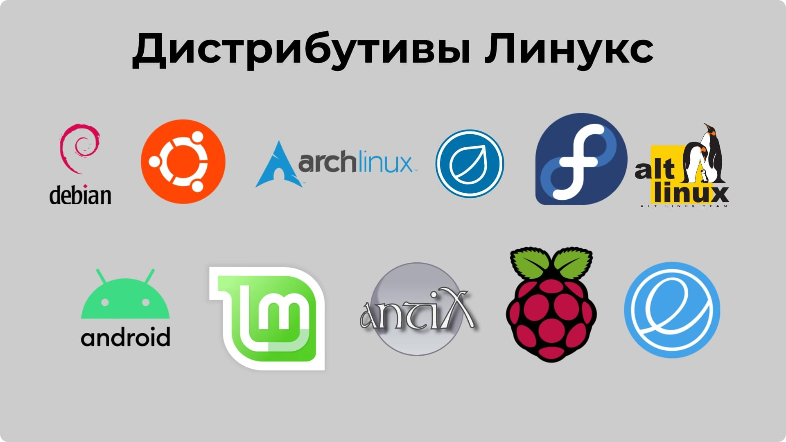
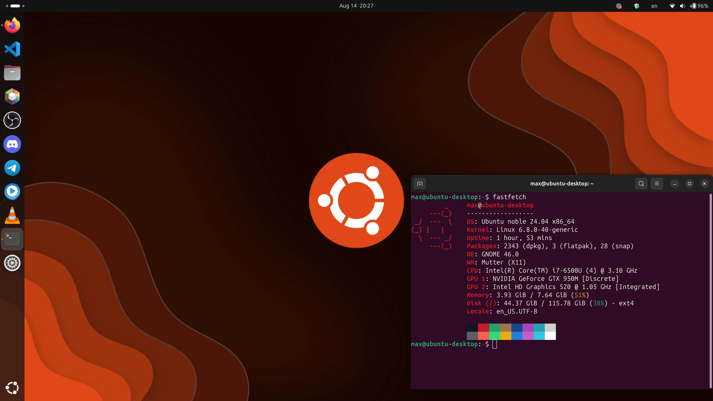
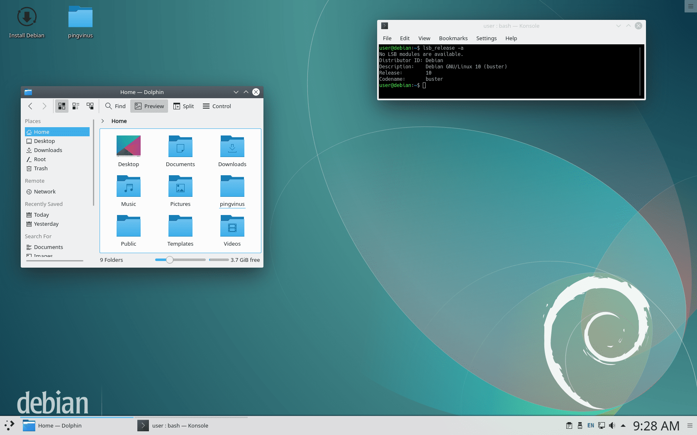
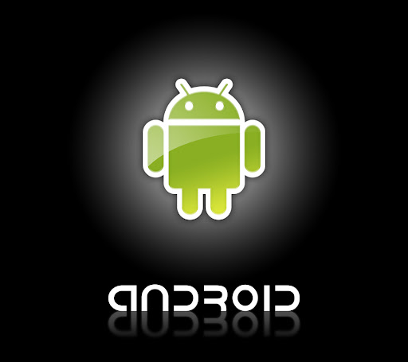
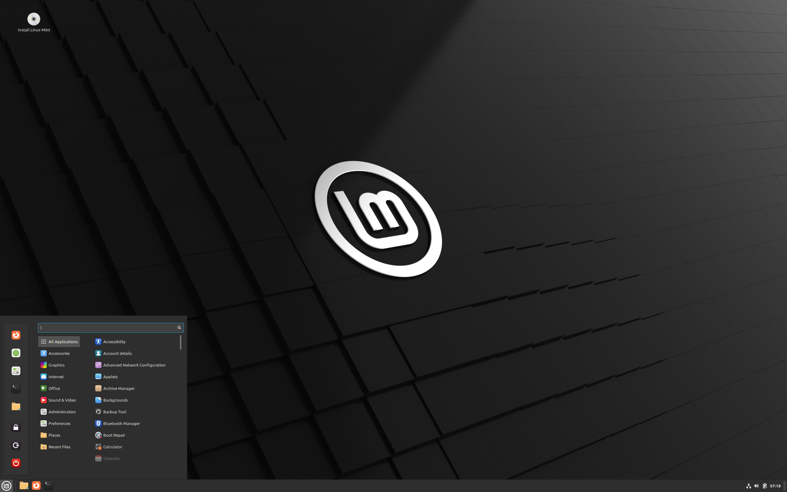

Какой дистрибутив Linux выбрать?
Содержание
Шаг 1: Что такое дистрибутивы?
Дистрибутив – это комплект программного обеспечения, включающий файлы, архивы и другие необходимые компоненты для работы. Основная задача дистрибутива – предоставить пользователю готовую к работе программу, установку которой можно произвести без особых трудностей.
Дистрибутивы различаются по своему назначению и характеристикам. Например, для настольных ПК, серверов, мобильных устройств и других платформ. Каждый дистрибутив имеет свои уникальности и функциональность, чтобы соответствовать задачам пользователей.
Шаг 2: Ubuntu.
Ubuntu Linux — это операционная система для персональных компьютеров, которую можно использовать вместо Windows или Mac OS. Вы часто встретите эту систему на компьютерах программистов и системных администраторов.
Вот три причины, почему стоит попробовать Ubuntu в качестве основной или дополнительной операционной системы:
1. Можно реанимировать старый ПК - Ubuntu достаточно не требовательная система и постоянно обновляемая.
2. Не нужно платить за операционку, железо и софт. Она полностью является бесплатной.
3. Можно расширить ИТ-кругозор и познакомиться с терминалом. Она является самой лёгкой в освоении.
Шаг 3: Debian.
Debian — это операционная система с открытым исходным кодом, которая состоит из свободного программного обеспечения. На данный момент это самая популярная ОС среди Linux-продуктов.
Она стала основой для многих других дистрибутивов, например, Ubuntu и Kali Linux.
Причины перейти на Debian:
1. Ответственность разработчиков. Сложная система релизов позволяет тщательно проверять все программы. Разработчики Debian не могут позволить себе выпустить недоработанный продукт. Это самая первая и самая важная особенность ОС. При использовании стабильной версии риск ошибок системы минимален. Именно за надёжность многие крупные компании предпочитают использовать Debian.
2.Бесшовный переход между версиями. Система Debian отличается простыми и плавными обновлениями в ходе всего жизненного цикла выпуска, а также при переходе на новый крупный выпуск.
3.Большая библиотека. ОС имеет огромную библиотеку программных пакетов (около 59 000 пакетов). Пакеты используют формат deb. Этот формат был создан специально для Дебиан. Он широко известен в кругах специалистов благодаря высокому качеству.
Шаг 4: Android.
Android — популярная операционная система, построенная на ядре Linux.
Используется в смартфонах, планшетах, электронных книгах, цифровых проигрывателях, наручных часах, фитнес-браслетах, игровых приставках, ноутбуках, нетбуках, телевизорах и других устройствах.
Android создал в 2005 году разработчик Энди Рубин. В этом же году он продал свою идею Google за 130 миллионов долларов и начал работу под крылом компании. Эра устройств, работающих на операционной системе Android, началась в 2008 году, когда вышла ее первая официальная версия. 
Шаг 5: Mint.
Linux Mint (от англ. mint — «мята») — развиваемый сообществом бесплатный дистрибутив Linux, основанный на Ubuntu и Debian.
Целью проекта является предоставление «современной, элегантной и удобной операционной системы, которая одновременно является мощной и простой в использовании»
Linux Mint предоставляет полную поддержку разнообразных форматов мультимедиа, включает в себя некоторые проприетарные программы и поставляется в комплекте с обширным набором приложений с открытым исходным кодом.

Комментарии